This document covers the completion adapter system that enables the agent-swarm-kit framework to integrate with various AI language model providers. The adapters provide a standardized interface for interacting with different completion APIs while handling provider-specific message formatting, tool calls, and response processing.
For information about performance monitoring of completions, see Performance Monitoring. For broader AI integration patterns, see AI Integration.
The completion adapter system provides a unified interface for interacting with multiple AI providers through the AdapterUtils class. Each adapter transforms the framework's internal message format to the provider's expected format and processes responses back to the standard format.

The framework supports five major AI providers through dedicated adapter methods:
| Provider | Method | Default Model | Special Features |
|---|---|---|---|
| OpenAI | fromOpenAI |
gpt-3.5-turbo |
Response format control |
| Grok | fromGrok |
grok-3-mini |
X.AI's Grok model |
| Cohere | fromCohereClientV2 |
command-r-08-2024 |
Cohere's V2 client |
| LMStudio | fromLMStudio |
saiga_yandexgpt_8b_gguf |
Local model hosting |
| Ollama | fromOllama |
nemotron-mini:4b |
Custom tool protocol |
The fromOpenAI method handles OpenAI's chat completions API with optional response format control and standard tool calling support.
The fromGrok method interfaces with X.AI's Grok API, using similar message formatting to OpenAI but with provider-specific configurations.
The fromCohereClientV2 method transforms messages for Cohere's V2 client, handling different field naming conventions like toolCallId vs tool_call_id.
The fromLMStudio method connects to LMStudio's OpenAI-compatible API for local model hosting scenarios.
The fromOllama method includes special handling for tool calls using the TOOL_PROTOCOL_PROMPT to instruct models on XML-based tool call formatting.
Each adapter performs bidirectional message transformation between the framework's IModelMessage format and provider-specific formats.

Tool calls require special transformation because providers use different formats:
toolCalls field with different structureThe tool call transformation process:
All adapters use execpool to limit concurrent requests:
Built-in retry mechanism with:
Each adapter logs completion requests using Logger.logClient for debugging and monitoring.

The completion adapters integrate with the broader agent system through the dependency injection container and performance monitoring:
The TCompleteFn type ensures all adapters conform to the same interface:
type TCompleteFn = (args: ICompletionArgs) => Promise<IModelMessage>
The adapters are available through the Adapter singleton instance, providing a consistent entry point for the entire system.